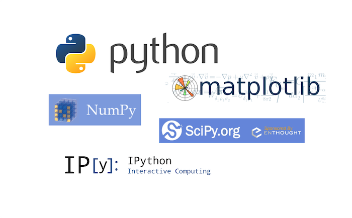

Installing Scientific Packages for Python3 on MacOS 10.9 Mavericks
-- written by Sebastian Raschka on March 13, 2014
Tweet
I just went through some pain (again) when I wanted to install some of Python's scientific libraries on my second Mac. I summarized the setup and installation process for future reference.
If you encounter any different or additional obstacles let me know, and please feel free to make any suggestions to improve this short walkthrough.

Sections
• Anaconda and Miniconda
• Consider a virtual environment
• Installing pip
• Installing NumPy
• Installing SciPy
• Installing matplotlib
• Installing IPython
• Updating installed packages
Anaconda and Miniconda
Alternatively, instead of going through all the manual steps listed in the following sections, there is the Anaconda Python distribution for scientific computing. Although Anaconda is distributed by Continuum Analytics, it is completely free and includes more than 125 packages for science and data analysis.
The installation procedure is nicely summarized here: http://docs.continuum.io/anaconda/install.html
If this is too much, the Miniconda might be right for you. Miniconda is basically just a Python distribution with the Conda package manager, which let's us install a list of Python packages into a specified conda environment.
$[bash]> conda create -n myenv python=3 $[bash]> conda install -n myenv numpy scipy matplotlib ipython
Note: environments will be created in ROOT_DIR/envs by default, you can use the -p instead of the -n flag in the conda commands above in order to specify a custom path.
If you we decided pro Anaconda or Miniconda, we are basically done at this point. The following sections are explaining a more (semi)-manual approach to install the packages individually using pip.
Consider a virtual environment
In order to not mess around with our system packages, we should consider setting up a virtual environment when we want to install the additional scientific packages.
To set up a new virtual environment, we can use the following command
$[bash]> python3 -m venv /path_to/my_virtual_env
and activate it via
$[bash]> source /path_to/my_virtual_env/bin/activate
Installing pip
pip is a tool for installing and managing Python packages. It makes the installation process for Python packages a lot easier, since they don't have to be downloaded manually.
If you haven't installed the pip package for your version of Python, yet, I'd suggest to download it from https://pypi.python.org/pypi/pip, unzip it, and install it from the unzipped directory via
$[bash]> python3 setup.py install
Installing NumPy
Installing NumPy should be straight forward now using pip
$[bash]> python3 -m pip install numpy
The installation will probably take a few minutes due to the source files that have to be compiled for your machine. Once it is installed, NumPy should be available in Python via
>> import numpy
If you want to see a few examples of how to operate with NumPy arrays, you can check out my Matrix Cheatsheet for Moving from MATLAB matrices to NumPy arrays
Installing SciPy
While the clang compiler worked fine for compiling the C source code for numpy, we now need an additional Fortran compiler in order to install scipy.
Installing a Fortran Compiler
Unfortunately, MacOS 10.9 Mavericks doesn't come with a Fortran compiler, but it is pretty easy to download and install one.
For example, gfortran for MacOS 10.9 can be downloaded from http://coudert.name/software/gfortran-4.8.2-Mavericks.dmg
Just double-click on the downloaded .DMG container and follow the familiar MacOS X installation procedure. Once it is installed, the gfortran compiler should be available from the command line,. We can test it by typing
$[bash]> gfortran -v
Among other information, we will see the current version, e.g.,
gcc version 4.8.2 (GCC)
Installing SciPy
Now, we should be good to go to install SciPy using pip.
$[bash]> python3 -m pip install scipy
After it was successfully installed - might also take a couple of minutes due to the source code compilation - it should be available in Python via
>> import scipy
Installing matplotlib
The installation process for matplotlib should go very smoothly using pip, I haven't encountered any hurdles here.
$[bash]> python3 -m pip install matplotlib
After successful installation, it can be imported in Python via
>> import matplotlib
The matplotlib library has become my favorite data plotting tool recently, you can check out some examples in my little matplotlib-gallery on GitHub: https://github.com/rasbt/matplotlib_gallery
Installing IPython
Installing pyzmq
The IPython kernel requires the pyzmq package to run, pyzmq contains Python bindings for ØMQ, which is a lightweight and fast messaging implementation. It can be installed via pip.
$[bash]> python3 -m pip install pyzmq
Installing pyside
When I was trying to install the pyside package, I had it complaining about the missing cmake. It can be downloaded from:
http://www.cmake.org/files/v2.8/cmake-2.8.12.2-Darwin64-universal.dmg
Just as we did with gfortran in the Installing SciPy section, double-click on the downloaded .DMG container and follow the familiar MacOS X installation procedure.
We can confirm that it was successfully installed by typing
$[bash]> cmake --version
into the command line where it would print something like
cmake version 2.8.12.2
Installing IPython
Now, we should finally be able to install IPython with all its further dependencies (pygments, Sphinx, jinja2, docutils, markupsafe) via
$[bash]> python3 -m pip install ipython[all]
By doing this, we would install IPython to a custom location, e.g., /Library/Frameworks/Python.framework/Versions/3.3/lib/python3.3/site-packages/IPython.
You can find the path to this location by importing IPython in Python and then print its path:
>> import IPython >> IPython.__path__
Finally, we can set an alias in our .bash_profile or .bash_rc file to conviniently run IPython from the console. E.g.,
alias ipython3="python3 /Library/Frameworks/Python.framework/Versions/3.3/lib/python3.3/site-packages/IPython/terminal/ipapp.py"
(Don't forget to source the .bash_rc or .bash_profile file afterwards)
Now we can run
$[bash]> ipython3
from you shell terminal to launch the interactive IPython shell, and
$[bash]> ipython3 notebook
to bring up the awesome IPython notebook in our browser, respectively.
Updating installed packages
Finally, if we want to keep our freshly installed packages up to date, we'd run pip with the --upgrade flag, for example
$[bash]> python3 -m pip install numpy --upgrade